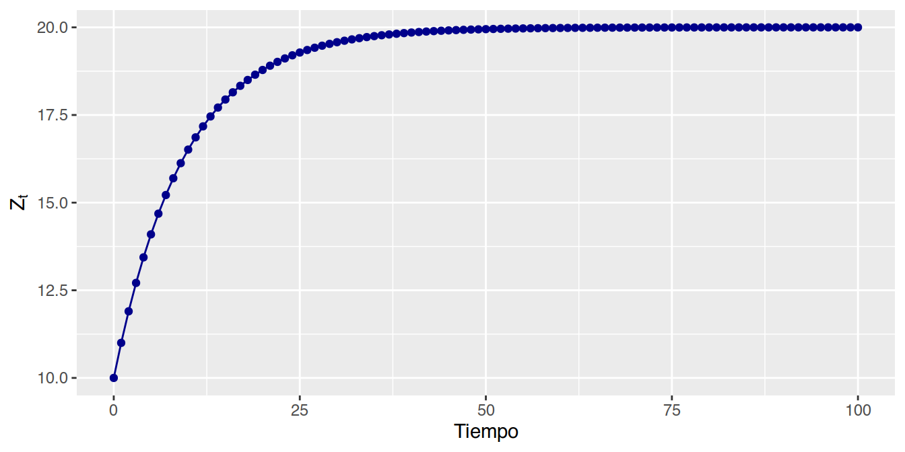
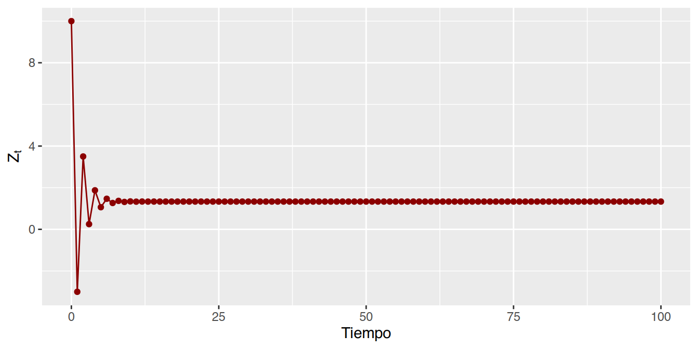
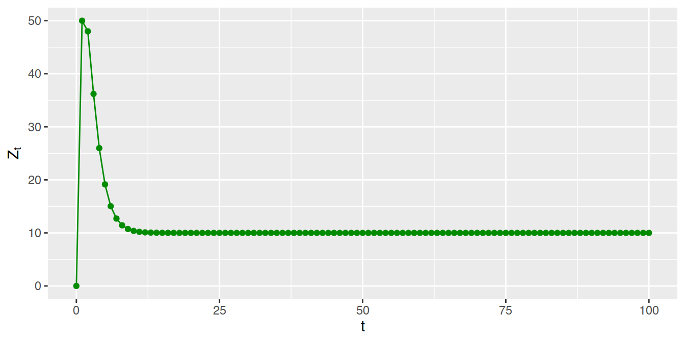
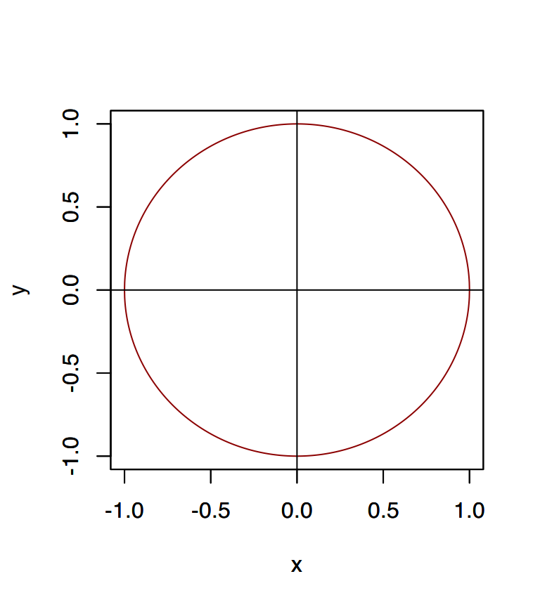

![]()

Notas de Clase Series de Tiempo
Descubre cómo seleccionar hardware, descargar la imagen ISO y preparar los medios de instalación. Exploraremos opciones para probar o instalar Linux en tu equipo.
Informática
Tecnología
Sistemas Operativos
Linux
Únete a esta emocionante serie de introducción a Linux, donde te guiaré a través de los pasos para descargar e instalar GNU/Linux en tu equipo. Aprenderás a seleccionar el hardware adecuado, descargar la imagen ISO de tu distribución preferida y preparar los medios de instalación. Además, exploraremos diferentes opciones para probar o instalar Linux. ¡Embárcate en esta aventura y descubre el poder de GNU/Linux!
Elementos de Ecuaciones en Diferencia
a) Ecuaciones en Diferencia para procesos deterministas
En el capítulo previo se hizó una introducción al concepto de series de tiempo. En este Capítulo se pretende desarrollar la construcción de los procesos generadores de datos de las series de tiempo. En un sentido más formal, se expondrá que las series de tiempo se pueden considerar como una secuencia de variables aleatorias.
Para tales efectos, se desarrollará una introducción al concepto de ecuaciones en diferencia. Así, las preguntas que se pretende responder son:
- ¿Cuál es la solución de la ecuación en diferencia que se estudia?
b)¿Cuáles son las condiciones para que un proceso estocástico, representado mediante una ecuación en diferencia, llegue a alcanzar un punto de equilibrio en el largo plazo?
El término de ecuación en diferencia sirve para denominar un proceso similar o equivalente dentro de las ecuaciones diferenciales, dentro del cual se consideran a un conjunto de variables que están en función del tiempo. Así, si consideramos al tiempo como una variable continua, es decir, consideramos una variable \(Z(t)\), podemos expresar las siguientes expresiones para la ecuación diferencial:
\[ \frac{dZ(t)}{dt}; \frac{d^2Z(t)}{dt^2}; \ldots; \frac{d^kZ(t)}{dt^k} \tag{1}\]
Por otro lado, suponiendo el caso del tiempo en forma discreta, es decir, con \(t = \ldots, -2, -1, 0, 1, 2, \ldots\), entonces el comportamiento de la serie de variables dadas por \(Z_t\), la cual se puede expresar como:
\[ \Delta Z_t; \Delta^2 Z_t; \ldots; \Delta^k Z_t \tag{2}\]
Observemos que una forma técnicamente más correcta es escribir las expresiones anteriores como:
\[ \frac{\Delta Z_t}{\Delta t}; \frac{\Delta^2 Z_t}{\Delta t^2}; \ldots; \frac{\Delta^k Z_t}{\Delta t^k} \tag{3}\]
No obstante, no pasa desapercibido que \(\Delta t = 1\), por lo que resultan equivalentes ambos conjuntos de expresiones @ref(eq:Diff1) y @ref(eq:Diff2).
Ecuaciones en Diferencia Lineales de Primer Orden
El primer caso que se suele estudiar en relación a Ecuaciones en Diferencia es el de las Ecuaciones en Diferencia Lineales de Primer Orden. Al respecto, al igual que en el caso continúo, las variaciones de la variable \(Z_t\) se pueden expresar como se ilustra en el siguiente ejemplo. Consideremos la siguiente ecuación:
\[ Z_t = a_0 + a_1 Z_{t-1} \tag{4}\]
Donde, \(t = \ldots, -2, -1, 0, 1, 2, \ldots\), y \(a_0\) y \(a_1 \neq 0\) son números reales constantes. De (@ref(eq:EDPO) podememos despejar la variable \(Z_{t-1}\) y obtener una forma de ecuación en diferencia:
\[ Z_t - a_1 Z_{t-1} = a_0 \tag{5}\]
Ahora denotemos a \(L Z_t = Z_{t-1}\), es decir, mediante el operador \(L\) se puede rezagar una variable dada. En general, podemos decir que el operador tiene dos propiedades, la primera es que es lineal en el sentido de que abre sumas y saca escalares como se muestra en la siguiente expresión para el caso de un (1) rezago:
\[ L(\alpha Z_{t} + \beta) = \alpha Z_{t-1} + \beta \tag{6}\]
Donde \(\alpha, \beta \in \mathbb{R}\) y \(\alpha, \beta \neq 0\). Otro reesultado implícito en esta primera propiedad es que el operador rezago aplicado a cualquier escalar dará como resultado el escalar, puesto que este es una constante sin importa el momento \(t\) en el cual se encuentre la variable \(Z\).
La segunda propiedad del operador es que se puede aplicar de forma consecutiva a una misma variable. Es decir, \(L ( Z_{t-1}) = L L Z_{t} = L^2 Z_{t}\), por lo que en general tendremos: \(L^p Z_t = Z_{t-p}\) (con \(p \in \mathbb{Z}\)). Así, en el caso de p rezagos la propiedad de linealidad del operador rezago será:
\[ L^p (\alpha Z_{t} + \beta) = \alpha Z_{t-p} + \beta \tag{7}\]
Dicho lo anterio podemos escribir la solución general de @ref(eq:EDPO2) como:
\[\begin{eqnarray} Z_t - a_1 L Z_t & = & a_0 \nonumber \\ (1 - a_1 L)Z_t & = & a_0 \nonumber \\ Z_t & = & a_0 \frac{1}{1 - a_1 L} + s a^t_1 \nonumber \\ Z_t & = & a_0 \frac{1}{1 - a_1} + s a^t_1 {#eq-PROC01) \end{eqnarray}\]Donde \(a_1 \neq 1\) y \(t = \ldots, -2, -1, 0, 1, 2, \ldots\). Notése que la aplicación del operador rezago \(L\) a la constante \(a_1\) dará como resultado el valor de la misma constante, ya que ésta no depende del momento \(t\) en el cuál observemos a la variable \(Z_t\). En la ecuación @ref(eq:PROC01) se adiciona un término \(s a^t_1\) que permite ubicar la trayectoria inicial de la solución de la ecuación. El componente no significa un cambio respecto de la ecuación @ref(eq:EDPO2) original, ya que si buscaramos reconstruir a ésta ecuación tendríamos: \[\begin{eqnarray} (1 - a_1 L) s a^t_1 & = & s a^t_1 - a_1 s L a^{t}_1 \nonumber \\ & = & s a^t_1 - a_1 s a^{t - 1}_1 \nonumber \\ & = & s a^t_1 - s a^t_1 \nonumber \\ & = & 0 \nonumber \end{eqnarray}\]
La ecuación @ref(eq:PROC01) se suele interpretar como la solución de largo plazo. Ahora demostraremos por qué es cierta la ecuación y discutiremos algunas condiciones que se deben observar en esta solución para que sea una solución convergente. No obstante, primero discutiremos un método indirecto e incompleto para demostrar el resultado, dicho método es conocido como el método iterativo. Plantearemos las siguientes ecuaciones partículares donde suponemos la existencia del valor inicial \(Z_0\) del proceso:
\[\begin{equation*} Z_1 = a_0 + a_1 Z_0 \end{equation*}\] \[\begin{eqnarray*} Z_2 & = & a_0 + a_1 Z_1 \\ & = & a_0 + a_1 (a_0 + a_1 Z_0) \\ & = & a_0 + a_0 a_1 + a^2_1 Z_0 \\ & = & a_0 (1 + a_1) + a^2_1 Z_0 \end{eqnarray*}\] \[\begin{eqnarray*} Z_3 & = & a_0 + a_1 Z_2 \\ & = & a_0 + a_1 (a_0 + a_0 a_1 + a^2_1 Z_0) \\ & = & a_0 + a_0 a_1 + a_0 a^2_1 + a^3_1 Z_0 \\ & = & a_0 (1 + a_1 + a^2_1) + a^3_1 Z_0 \end{eqnarray*}\]De lo anterior se puede inferir que el método iterativo convergerá hacia una expresión como la siguiente en el momento \(t\):
\[\begin{eqnarray} Z_t & = & a_0 + a_1 Z_{t-1} \nonumber \\ & = & a_0 (1 + a_1 + a^2_1 + \ldots + a^{t-1}_1) + a^t_1 Z_0 \nonumber \\ & = & a_0 \sum^{t-1}_{i = 0}{a^i_1} + a^t_1 Z_0 {#eq-SUM) \end{eqnarray}\]Donde, es necesario que en la ecuación @ref(eq:SUM) se cumpla que \(\lvert{a_1}\lvert < 1\) para que la suma sea convergente –más adelante detallaremos esta afirmación–. A este tipo de ecuaciones se les puede denominar como lineales. Esto en razón de que ningún término de la variable \(Z\) aparce elevado a ninguna potencia distinta a 1. También, son de primer orden, ya que el rezago de la variable \(Z\) es sólo de un período.
En adelante trabajaremos con ecuaciones en las que la variable \(Z\) se encuentra rezagada en cualquiera de los siguientes casos:
\[ Z_t, Z_{t-1}, Z_{t-2}, Z_{t-3}, \ldots, Z_{t-p}, \ldots \tag{8}\]
Por lo que diremos que en adelante el curso versará sobre ecuaciones en diferencia lineales y de cualquier orden \(p\).
Retomando la ecuación (\(\ref{SUM}\)) y considerando la parte de la suma de los términos de \(a^i_1\), de tal forma que buscaremos dar una expresión más compresible a dicho término. Definamos la siguiente expresión como:
\[ S_{t-1} = \sum^{t-1}_{i = 0}{a^i_1} \tag{9}\]
Por lo tanto, \(S_t\) estaría dado por la siguiente expresión: \[\begin{eqnarray} S_{t} & = & a_1 \sum^{t-1}_{i = 0}{a^i_1} \nonumber \\ & = & a_1 (1 + a_1 + a^2_1 + \ldots + a^{t-1}_1) \nonumber \\ & = & a_1 + a^2_1 + a^3_1 + \ldots + a^{t}_1 \nonumber \\ & = & a_1 S_{t-1} {#eq-St) \end{eqnarray}\]
Tomando los dos resultados de las ecuaciones @ref(eq:St1) y @ref(eq:St) anteriores, podemos expresar que si a \(S_{t-1}\) le restamos \(S_t\), y desarrollando ambos lados de la ecuación anterior podemos obtener:
\[\begin{eqnarray} S_{t-1} - a_1 S_{t-1} & = & S_{t-1} - S_{t} \nonumber \\ (1 - a_1) S_{t-1} & = & (1 + a_1 + a^2_1 + \ldots + a^{t-1}_1) - (a_1 + a^2_1 + a^3_1 + \ldots + a^{t}_1) \nonumber \\ (1 - a_1) S_{t-1} & = & 1 - a^{t}_1 \nonumber \end{eqnarray}\]Así, podemos concluir que:
\[ S_{t-1} = \frac{1 - a^{t}_1}{1 - a_1} \tag{10}\]
Conjuntando éste último resultado de la ecuación @ref(eq:SUM2) con la ecuación @ref(eq:SUM) tenemos la siguiente solución por el método de iteración:
\[ Z_t = a_0 \left( \frac{1 - a^{t}_1}{1 - a_1} \right) + a^t_1 Z_0 \tag{11}\]
De esta forma la ecuación @ref(eq:SOLITER) es una solición para la ecuación @ref(eq:SUM), que es una ecuación de un proceso de una Ecuación en Diferencia plantenado en la ecuación @ref(eq:EDPO). Está solución aún no es general, en el sentido de que sea válida para cualquiel tipo de proceso: convergente o divergente. Dicha convergencia o divengencia estará determinada por el paramétro \(a_1\). No debe pasar desapercibido que cuando \(t \rightarrow \infty\) o cuando la muestra es muy grande (lo que es equivalente), podemos decir que la solución solo puede converger a la siguiente expresión cuando se considera que \(|a_1| < 1\):
\[ Z_t = a_0 \left( \frac{1}{1 - a_1} \right) \tag{12}\]
Retomemos ahora el caso general descrito en la ecuación @ref(eq:PROC01) y determinemos una solución general en la cual \(a_1 \neq 1\) y \(t = \ldots, -2, -1, 0, 1, 2, \ldots\). Para ello observemos que el siguiente componente en la ecuación mencionada se puede interpretar como la suma infinita de términos descritos como: \[\begin{eqnarray} \frac{1}{1 - a_1} & = & 1 + a_1 + a_1^2 + \ldots + a_1^t + \ldots \nonumber \\ & = & \sum_{i = 0}^{\infty} a_1^{i} {#eq-SUMINF) \end{eqnarray}\]
Donde claramente es necesario que \(|a_1| < 1\). Por lo tanto, sólo faltaría determinar el valor de la constante \(s\) en la ecuación (\(\ref{PROC01}\)) de la siguiente forma, supongamos que observamos el proceso en el momento inicial, por lo que es posible determinar el valor de la constante conociendo el valor inicial del proceso como sigue:
\[ Z_0 = a_0 \frac{1}{1 - a_1} + s \tag{13}\]
De la ecuación @ref(eq:Z0) tenemos que:
\[ s = Z_0 - a_0 \frac{1}{1 - a_1} \tag{14}\]
Así, juntando la ecuación @ref(eq:PROC01) y ecuación @ref(eq:eqs) tenemos la expresión:
\[ Z_t = a_0 \frac{1 - a^t_1}{1 - a_1} + a^t_1 Z_0 \tag{15}\]
No debe pasar desapercibido que está solución es la misma que la mostrada en la ecuación (@ref(eq:SOLITER), por lo que en realidad ambas ecuaciones son una solución general indistintamente entre las ecuaciones @ref(eq:SOLITER) y @ref(eq:SOL_GEN). Ambas convergen a la expresión como la ecuación @ref(eq:trayec), con la misma condición de convergencia \(|a_1| < 1\). Para ilustrar estas ecuaciones veámos algunos ejemplos al respecto.
Consideremos que tenemos un proceso \(Z_t\) que es descrito por una ecuación en diferencia lineal de primer orden dada por:
\[ Z_t = 2 + 0.9 Z_{t-1} \tag{16}\]
Siguiendo la expresión mostrada en la ecuación @ref(eq:SOLGEN), obtenemos la expresión:
\[ Z_t = 2 \left( \frac{1 - 0.9^{t}}{1 - 0.9} \right) + 0.9^t Z_0 \tag{17}\]
Donde asumiremos que el valor inicial es \(Z_0 = 10\) y que la expresión debe converger al valor de 20, cuando \(t\) es muy grande o tiende a infinito. De forma similar tomemos otro ejemplo, en el cual asumimos la siguiente expresión:
\[ Z_t = 2 - 0.5 Z_{t-1} \tag{18}\]
Siguiendo la expresión mostrada en la ecuación (\(\ref{SOL_GEN}\)), obtenemos:
\[ Z_t = 2 \left( \frac{1 - (-0.5)^{t}}{1 + 0.5} \right) + (-0.5)^t Z_0 \tag{19}\]
Donde asumiremos que el valor inicial es \(Z_0 = 10\) y que la ecuación converge al valor de \(1.3333333 \ldots\), cuando \(t\) es muy grande o tiende a infinito. Ahora simulemos el comportamiento de ambos procesos y estableceremos los resultados del Cuadro \(\ref{eq_diff_01}\). Notemos que el segundo proceso converge de una forma más rapida que el primero. El Cuadro @ref(tab:table1) se ilustra en las siguientes dos Figura @ref(fig:fig21) y Figura @ref(fig:fig22).
| Tiempo | \(Z_t =2+0.9Z_{t-1}\) | \(Z_t = 2-0.5Z_{t-1}\) |
|---|---|---|
| 0 | 10.00000 | 10.000000 |
| 1 | 11.00000 | -3.000000 |
| 2 | 11.90000 | 3.500000 |
| 3 | 12.71000 | 0.250000 |
| 4 | 13.43900 | 1.875000 |
| 5 | 14.09510 | 1.062500 |
| 6 | 14.68559 | 1.468750 |
| 7 | 15.21703 | 1.265625 |
| 8 | 15.69533 | 1.367188 |
| 9 | 16.12580 | 1.316406 |
| 10 | 16.51322 | 1.341797 |
| 11 | 16.86189 | 1.329102 |
| 12 | 17.17570 | 1.335449 |
| 13 | 17.45813 | 1.332275 |
| 14 | 17.71232 | 1.333862 |
| 15 | 17.94109 | 1.333069 |
| 96 | 19.99960 | 1.333333 |
| 97 | 19.99964 | 1.333333 |
| 98 | 19.99967 | 1.333333 |
| 99 | 19.99970 | 1.333333 |
| 100 | 19.99973 | 1.333333 |

Ecuaciones en Diferencia Lineales de Segundo Orden y de orden superior
Como un segundo caso a estudiar se ubica el caso de las Ecuaciones en Diferencia Lineales de Segundo Orden y de orden superior. Primero, sea una ecuación como la siguiente, la cual es lineal y de segundo orden, ya que tiene asociado un término de \(Z_t\) rezagado dos periódos:
\[ Z_t = a_0 + a_1 Z_{t-1} + a_2 Z_{t-2} \tag{20}\]
Donde \(t = \ldots, -2, -1, 0, 1, 2, \ldots\) y \(a_1, a_2 \neq 0\). Reordenando la ecuación @ref(eq:EDSO) podemos escribir: \[\begin{eqnarray} Z_t - a_1 Z_{t-1} - a_2 Z_{t-2} & = & a_0 \nonumber \\ Z_t - a_1 L Z_{t} - a_2 L^2 Z_{t} & = & a_0 \nonumber \\ (1 - a_1 L - a_2 L^2)Z_t & = & a_0 {#eq-EDSOSOL) \end{eqnarray}\]
Así, la solución general propuesta para la ecuación @ref(eq:EDSOSOL) es la siguiente, la cual es una forma analóga a una Ecuación Lineal en Diferencia de Primer Orden:
\[ Z_t = \frac{a_0}{1 - a_1 - a_2} + s_1 g^t_1 + s_2 g^t_2 \tag{21}\]
En donde \(s_1\) y \(s_2\) son constantes que se determinan mediante dos condiciones iniciales –por lo que para resolver este tipo de ecuaciones requerimos conocer dos condiciones iniciales–. Los valores de \(g_1\) y \(g_2\) están relacionados con los coeficientes \(a_1\) y \(a_2\), de esta forma:
\[ a_1 = g_1 + g_2 \tag{22}\]
\[ a_2 = - g_1 g_2 \tag{23}\]
Lo anterior surge del siguiente procedimiento y recordando que siempre es posible descomponer una ecuación cuadrática en expresiones como las siguientes:
\[\begin{eqnarray} (1 - a_1 L - a_2 L^2) & = & (1 - g_1 L)(1 - g_2 L) \nonumber \\ & = & 1 - g_1 L - g_2 L + g_1 g_2 L^2 \nonumber \\ & = & 1 - (g_1 + g_2) L + g_1 g_2 L^2 {#eq-eqcaracteristica) \end{eqnarray}\]
Donde se observa la equivalencia mostrada en las ecuaciones @ref(eq:a1) y @ref(eq:a2). Así, considerando la ecuación @ref(eq:SOLGEN2) tenemos que:
\[\begin{eqnarray} (1 - a_1 L - a_2 L^2) Z_t & = & (1 - g_1 L)(1 - g_2 L) Z_t \nonumber \\ & = & a_0 + (1 - g_1 L)(1 - g_2 L) s_1 g^t_1 \nonumber \\ & & + (1 - g_1 L)(1 - g_2 L) s_2 g^t_2 \end{eqnarray}\]
Por lo tanto, buscamos que para que el proceso sea equivalente y podamos interpretar que la ecuación @ref(eq:SOLGEN2) sea una solución general deberá pasar lo siguiente:
\[ (1 - g_1 L) (1 - g_2 L) s_1 g^t_1 + (1 - g_1 L) (1 - g_2 L) s_2 g^t_2 = 0 \]
O, escrito de otra forma:
\[ (1 - g_1 L) s_1 g^t_1 = (1 - g_2 L) s_2 g^t_2 = 0 \]
Ahora determinemos cuáles son los valores \(g_1\) y \(g_2\) dados los valores \(a_1\) y \(a_2\) que nos permitan determinar si el proceso será convergente. Para ello debemos resolver la siguiente ecuación que se deriva de la ecuación @ref(eq:eqcaracteristica):
\[ 1 - a_1 x - a_2 x^2 = (1 - g_1 x)(1 - g_2 x) = 0 \]
Donde, claramente existen dos raíces: \(x_1 = g^{-1}_1\) y \(x_2 = g^{-1}_2\). Así, la solución estará dada por las raíces de la ecuación característica:
\[\begin{eqnarray} 1 - a_1 x - a_2 x^2 = 0 \nonumber \\ a_2 x^2 + a_1 x - 1 = 0 {#eq-POL2) \end{eqnarray}\]Cuya solución es:
\[ x = \frac{- a_1 \pm \sqrt{a^2_1 + 4 a_2}}{2 a_2} \]
Es importante distinguir tres diferentes casos en relación con las raíces que surgen como solución de la ecuación @ref(eq:POL2), estos son:
Caso I. Si \(a^2_1 + 4 a_2 > 0\), la ecuación @ref(eq:POL2) proporcionará dos valores de raíces reales y distintos, eso es \(x_1 = g^{-1}_1 \neq x_2 = g^{-1}_2\). Si por ahora suponemos que \(|{g_1} < 1|\) y que \(|{g_2} < 1|\), entonces tendremos que: \[\begin{eqnarray} (1 - g_1 L)^{-1} (1 - g_2 L)^{-1} a_0 & =& \left( \sum^{\infty}_{j = 0}{g^j_1 L^j} \right) \left( \sum^{\infty}_{j = 0}{g^j_2 L^j} \right) a_0 \nonumber \\ & = & \left( \sum^{\infty}_{j = 0}{g^j_1} \right) \left( \sum^{\infty}_{j = 0}{g^j_2} \right) a_0 \nonumber \\ & = & \frac{a_0}{(1 - g_1)(1 - g_2)} \nonumber \\ & = & \frac{a_0}{1 - a_1 - a_2} \end{eqnarray}\]
Esto último es el punto de equilibrio de la ecuación @ref(eq:SOLGEN2); considerando que \(|{g_1} < 1|\) y que \(|{g_2} < 1|\) –notemos que los demás casos son divergentes, ya que la suma anterior nno connvergería–. De esta forma la solución de la ecuación estará dada por:
\[ \lim_{t \to \infty} Z_t = \frac{a_0}{1 - a_1 - a_2} \tag{24}\]
Caso II. Si \(a_1^2 + 4a_2 < 0\) en la ecuación @ref(eq:POL2), entonces las raíces serán números complejos conjugados, es decir:
\[\begin{eqnarray} g_i^{-1} & = & a \pm ib \\ g_i & = & u \pm iv \end{eqnarray}\]
Dichas raíces las podemos escribir en coordenadas polares como:
\[\begin{eqnarray} g_1^{-1} & = & r e^{i \theta} = r (cos(\theta) + i sen(\theta)) \\ g_2^{-1} & = & r e^{-i \theta} = r (cos(\theta) - i sen(\theta)) \end{eqnarray}\] Donde: \(r = \sqrt{u^2 + v^2}\), a esta expresión también se le conoce como modulo. Alternativamente, podemos escribir que \(r = \sqrt{g_1 g_2}\). La única condición es que \(r < 1\) para que el proceso descrito en la ecuación @ref(eq:SOLGEN2) sea convergente.
Al igual que en el Caso I, el punto de equilibrio de la ecuación se debería ubicar al rededor @ref(eq:Conver), siempre que \(r < 1\), por lo que el factor que determina la convergencia es el modulo, ya que si el modulo es mayor a 1, el proceso será divergente, pero si es menor a 1 convergerá a @ref(eq:Conver). Para ilustrar, el caso contrario es divergente puesto que representa trayentorias senoidales (oscilatorias) que sólo pueden converger si a medida que pasa el tiempo, las ondas son menos amplias.
Caso III. Ahora revisemos el caso en el que \(a_1^2 + 4a_2 = 0\), de esta forma las raíces serán identicas:
\[ g = g_1^{-1} = g_2^{-1} = \frac{-a_1}{2 a_2} \]
Así, el punto de equilibrio será dado por la solución descrita como:
\[\begin{eqnarray} (1 - g L)^2 Z_t & = & a_0 \nonumber \\ Z_t & = & \frac{a_0}{(1 - g L)^2} + s_1 g^t + s_2 t g^t \nonumber \\ & = & a_0 \sum_{i = 0}^{\infty} (1 + i) g^j + s_1 g^t + s_2 t g^t \end{eqnarray}\]
Donde la expresión amnterior es resultado de considerar el siguiente procedimiento. Sea:
\[\begin{eqnarray} f(g) & = & \frac{1}{(1 - g)} = \sum_{j = 0}^{\infty} g^j \nonumber \end{eqnarray}\]
Por lo que si hacemos la primer derivada del la expresión anterior tenemos que:
\[\begin{eqnarray} f'(g) & = & \frac{1}{(1 - g)^2} \nonumber \\ & = & \sum_{j = 0}^{\infty} j g^{j-1} \nonumber \\ & = & 0 + g^0 + 2 g^1 + 3 g^2 + \ldots \nonumber \\ & = & \sum_{j = 0}^{\infty} (1 + j) g^j \nonumber \end{eqnarray}\]
Ahora veámos un ejemplo de una Ecuación Lineal en Diferencia de Segundo Orden. Supongamos la ecuación y el desarrollo siguientes:
\[\begin{eqnarray} Z_t & = & 3 + 0.9 Z_{t-1} - 0.2 Z_{t-2} \nonumber \\ (1 - 0.9 L + 0.2 L^2) Z_t & = & 3 \nonumber \end{eqnarray}\]
La solución dada por una ecuación similar a la expresión @ref(eq:POL2), obtendríamos la solución dada por las ecuaciones equivalentes a:
\[\begin{eqnarray} 1 - 0.9 x + 0.2 x^2 = 0 \nonumber \\ - 0.2 x^2 + 0.9 x - 1 = 0 \nonumber \end{eqnarray}\]
De donde las raíces del polinomio característico \(x_1 = g_1^{-1}\) y \(x_2 = g_2^{-1}\) se obtienen de la expresión dada por:
\[\begin{eqnarray} x & = &\frac{-0.9 \pm \sqrt{0.81 + (4)(-0.2)}}{(2)(-0.2)} \nonumber \\ & = & \frac{0.9 \pm 0.1}{0.4} \nonumber \end{eqnarray}\]
Dado que el componente \(a^2_1 + 4 a_2\) es positivo, obtendremos dos raíces reales. Las raíces estarán dadas por \(x_1 = 2.5\) y \(x_2 = 2.0\), de lo cual podemos determinar que \(g_1 = 0.4\) y \(g_2 = 0.5\). De esta forma tenemos que \(|g_1| < 1\) y \(|g_2| < 1\), así la ecuación converge a la expresión dada por las siguientes expresiones:
\[\begin{eqnarray} Z_t & = & \frac{3}{1 - 0.9 L + 0.2 L^2} + s_1 (0.4)^t + s_2 (0.5)^t \nonumber \\ & = & \frac{3}{1 - 0.9 + 0.2} + s_1 (0.4)^t + s_2 (0.5)^t \nonumber \\ & = & \frac{3}{(1 - 0.4)(1 - 0.5)} + s_1 (0.4)^t + s_2 (0.5)^t \nonumber \end{eqnarray}\]
Al final, la ecuación que describe la solución general será:
\[ z_t = 10 + s_1 (0.4)^t + s_2 (0.5)^t \]
Para determinar los valores de \(s_1\) y \(s_2\) necesitamos obtener dos valores iniciales de la ecuación para lo cual iniciaremos como \(t = 0\) y luego obtenemos el valor de \(t = 1\), consideremos el valor de \(Z_0 = 0\) y \(Z_1 = 50\):
\[\begin{eqnarray*} Z_0 & = & 10 + s_1(0.4)^0 + s_2(0.5)^0 \\ 0 & = & 10 + s_1 + s_2 \\ Z_1 & = & 10 + s_1(0.4)^1 + s_2(0.5)^1 \\ 50 & = & 10 + 0.4 s_1 + 0.5 s_2 \end{eqnarray*}\]
Por lo que la solución es: \(s_1 = -450\) y \(s_2 = 440\), de donde podemos expresar la ecuación como:
\[ Z_t = 10 - 450(0.4)^t + 440(0.5)^t \tag{25}\]
La ecuación @ref(eq:Ejem01) anterior convergerá al valor de 10 cuando \(t \rightarrow \infty\). Para ilustrar la trayectoria de esta ecuación tomemos un cuadro similar al de los ejemplos anteriores. En el Cuadro @ref(tab:table2) y la Figura @ref(fig:fig23) mostramos los resultados de la trayectorua para 100 periodos.
| Tiempo | \(Z_t =10-450(0.4)^t+440(0.5)^t\) |
|---|---|
| 0 | 0.00000 |
| 1 | 50.00000 |
| 2 | 48.00000 |
| 3 | 36.20000 |
| 4 | 25.98000 |
| 5 | 19.14200 |
| 6 | 15.03180 |
| 7 | 12.70022 |
| 8 | 11.42384 |
| 9 | 10.74141 |
| 10 | 10.38250 |
| 11 | 10.19597 |
| 12 | 10.09987 |
| 13 | 10.05069 |
| 14 | 10.02565 |
| 15 | 10.01294 |
| 96 | 10.00000 |
| 97 | 10.00000 |
| 98 | 10.00000 |
| 99 | 10.00000 |
| 100 | 10.00000 |

Finalmente, discutiremos la solución para las Ecuaciones Lineales en Diferencia de Orden \(p\), donde \(p \geq 2\). En general una ecuación de este tipo se puede escribir como:
\[ Z_t = a_0 + a_1 Z_{t-1} + a_2 Z_{t-2} + \ldots + a_p Z_{t-p} \] {#eq-EDOP)
Donde \(t = \ldots, -2, -1, 0, 1, 2, \ldots\) y \(a_p \neq 0\). La ecuación @ref(eq:EDOP) se puede escribir como:
\[\begin{eqnarray} Z_t - a_1 Z_{t-1} - a_2 Z_{t-2} - \ldots - a_p Z_{t-p} & = & a_0 \nonumber \\ Z_t - a_1 L Z_t - a_2 L^2 Z_t - \ldots - a_p L^p Z_t & = & a_0 \nonumber \\ (1 - a_1 L - a_2 L^2 - \ldots - a_p L^p) Z_t & = & a_0 {#eq-EDOP2) \end{eqnarray}\]
Por el Teorema Fundamental del Álgebra es posible escribir a la ecuación @ref(eq:EDOP2) como:
\[\begin{eqnarray} (1 - g_1 L)(1 - g_1 L) \ldots (1 - g_p L) Z_t & = & a_0 {#eq-EDOP3) \end{eqnarray}\]
Utilizando la ecuación @ref(eq:EDOP2) y la ecuación @ref(eq:EDOP3) tenemos que la solución general de una ecuación como la descrita en @ref(eq:EDOP) se puede escribir como:
\[ Z_t = \frac{a_0}{1 - a_1 - a_2 - \ldots - a_p} + s_1 g^t_1 + s_2 g^t_2 + \ldots + s_p g^t_p \\ \tag{26}\]
\[\begin{eqnarray} Z_t & = & \frac{a_0}{(1 - g_1)(1 - g_1) \ldots (1 - g_p)} + s_1 g^t_1 + s_2 g^t_2 + \ldots + s_p g^t_p {#eq-EDOPGEN2) \end{eqnarray}\]
Donde \(s_1\), \(s_2\), …, \(s_p\) son cosntantes que se determinan utilizando \(p\) valores partículares de \(Z_t\), y la solución general descrita en las ecuaciones @ref(eq:EDOPGEN) y @ref(eq:EDOPGEN2) implica encontrar \(p\) raíces: \(x_1 = g^{-1}_1\), \(x_2 = g^{-1}_2\), …, \(x_p = g^{-1}_p\) de los siguientes polinomios equivalentes:
\[\begin{eqnarray} (1 - g_1)(1 - g_1) \ldots (1 - g_p) = 0 \\ 1 - a_1 x - a_2 x^2 - \ldots - a_p x^p = 0 \\ {#eq-POLGEN) a_p x^p + \ldots + a_2 x^2 + a_1 x - 1 = 0 \end{eqnarray}\]Antes de plantear la solución general, analicemos una solución patícular cuando un conjunto de las \(p\) raíces, digamos un total de \(m\), son iguales, es decir, cuando sucede que \(g_1 = g_2 = \ldots = g_m = g\) (con \(1 < m \leq p\)). En este caso la solución general en la ecuación @ref(eq:EDOPGEN2) se escribe como:
\[\begin{eqnarray} Z_t & = & \frac{a_0}{(1 - g)^m(1 - g_{m+1}) \ldots (1 - g_p)} \nonumber \\ & & + s_1 g^t + s_2 t g^t + \ldots + s_m t^{m-1} g^t + s_{m+1} g^t_{m+1} + \ldots + s_{p} g^t_{p} {#eq-EDOPGEN3) \end{eqnarray}\]
Definamos:
\[ f(g) = \frac{1}{1 - g} = \sum_{j = 0}^{\infty} g^j \]
Si retomamos el método descrito parráfos arriba tenemos las siguientes expresiones. Cuando \(m = 2\):
\[ f'(g) = \frac{1}{(1 - g)^2} = \sum_{j = 0}^{\infty} j g^{j-1} = \sum_{j = 0}^{\infty} (1 + j) g^j \nonumber \]
En el otro extremo, cuando \(m = p\):
\[ f^{(p-1)}(g) = \frac{p-1}{(1 - g)^p} = \sum_{j = 0}^{\infty} \frac{(p-1+j)(p-2+j) \ldots (2+j)(1+j)}{(p-1)!} g^j \]
Así, en el extremo cuando \(m = p\) la solución general podría estar dada por: \[\begin{eqnarray} Z_t & = & a_0 \sum_{j = 0}^{\infty} \frac{(p-1+j)(p-2+j) \ldots (2+j)(1+j)}{(p-1)!} g^j \nonumber & & + g^t \sum_{i = 0}^p s_i t^{i-1} {#eq-EDOPGEN4) \end{eqnarray}\]
Donde \(|{g} < 1|\), \(t = \ldots, -2, -1, 0, 1, 2, \ldots\). Para finalizar esta sección, plantearemos la expresión de polinomio característico que nos permitirá hacer el análisis de convergencia de los procesos. Partamos de que la ecuación @ref(eq:POLGEN) se puede escribir como:
\[ (x^{-1})^p - a_1 (x^{-1})^{p-1} - a_2 (x^{-1})^{p-1} - \ldots - a_p = 0 \tag{27}\]
La ecuación @ref(eq:POLGEN2) permite interpretar las raíces del polinomio característico de forma directa ya que \(x^{-1}_1 = g_1\), \(x^{-1}_2 = g_2\), …, \(x^{-1}_p = g_p\). Así, siempre que \(p \geq 1\) en la ecuación @ref(eq:EDOP), diremos que el proceso descrito en esa ecuación dará como resultado un proceso convergente si se cumplen las dos condiciones @ref(eq:COND1) y @ref(eq:COND2):
\[ |a_p| < 1 \] {#eq-COND1)
\[ a_1 + a_2 + \ldots + a_p < 1 \] {#eq-COND2)
Alternativamente, cuando las raíces son reales lo anterior es equivalente a la expresión @ref(eq:COND3):
\[\begin{eqnarray} |g_i| < 1 {#eq-COND3) \end{eqnarray}\]Para \(\forall i = 1, 2, \ldots, p\). Cuando la raíces son imaginarias, las dos condiciones @ref(eq:COND1) y @ref(eq:COND2) son equivalentes a la expresión @ref(eq:COND4):
\[\begin{eqnarray} \sqrt{g_i g_j} = \sqrt{u^2 + v^2} < 1 {#eq-COND4) \end{eqnarray}\]Para \(\forall i \neq j\) y \(i, j = 1, 2, \ldots, p\). Cuando \(g_1 = g_2 = \ldots = g_p = g\), la condición de la ecuación @ref(eq:COND3) se resume a que \(|g| < 1\). En resumen, las condiciones descritas en las ecuaciones @ref(eq:COND3) y @ref(eq:COND4) se puden ilustrar con un circulo unitario como el de la Figura @ref(fig:fig24) en que sí las raíces se ubican dentro de éste, podemos decir que el proceso es convergente en el largo plazo.

Operador de rezago L
Denotemos, como se ha mencionado con anterioridad, con \(L\) al operador de rezago, el cual nos permitirá construir una relación entre diferencias y medias móviles como se verá más adelante en los procesos univariados \(AR(p)\), \(MA(q)\) y, en general, \(ARIMA(p, d, q)\). Sean \(X\), \(Y\) o \(Z\) variables con las que denotaremos a una serie de tiempo (note que hasta el momento no hemos definido qué es una serie de tiempo, no obstante no es necesario definirla para hacer uso del operador).
En esta sección resumiremos algunas propiedades usadas en el capítulo y en capítulos más adelante. Así, si a dicha serie le aplicamos el operador rezago antes definido, el resultado deberá ser que cada uno de los valores de la serie es retardado o regresado un período. Es decir:
\[ L Z_t = Z_{t-1} \] {#eq-Lag1)
De esta forma, si aplicamos el operador rezago \(L\) a la nueva serie de tiempo dada por \(Z_{t-1}\) podemos obtener \(Z_{t-2}\), haciendo uso de la ecuación @ref(eq:Lag1) podemos obtener:
\[ L Z_{t-1} = L(L Z_t) = L^2 Z_t = Z_{t-2} \]
Mediante una generalización podemos obtener:
\[ L^k Z_t = Z_{t-k} \]
Para \(k = \ldots, -2, -1, 0, 1, 2, \ldots\). Así, para \(k = 0\) obtenemos la identidad dado que \(L^0 Z_t = Z_t\), de tal forma que siempre asumiremos que \(L^0 = 1\). En otro caso, cuando \(k > 0\) a la serie de tiempo a la cual se le aplique el operador rezago \(L\) se le deberá aplicar un rezago de \(k\) periodos a cada uno de los elementos de la serie. Por el contrario, cuando \(k < 0\) el operador rezago significa que se deberá adelantar \(|k|\) veces a cada elemento de la serie. Por ejemplo, \(L^{-3} Z_t = Z_{t+3}\).
Las reglas descritas en lo subsecuente se mantienen indistintamene cuando aplican para el caso de rezagar como para cuando se adelanta una serie. Como primera propiedad tomemos a la siguiente propiedad:
\[ L^{m} Z_{t-n} = L^{m} (L^{n} Z_{t}) = L^{m + n} Z_{t} = Z_{t-(n + m)} \]
De lo anterior podemos inferir el siguiente resultado:
\[ \Delta Z_{t} = Z_{t} - Z_{t-1} = (1 - L) Z_{t} \]
En el caso de la diferencia de órden cuatro o cuarta diferencia se puede expresar como:
\[ \Delta_{4} Z_{t} = Z_{t} - Z_{t-4} = (1 - L^4) Z_{t} \tag{28}\]
Al respecto, vale la pena aclarar que en ocaciones se hará uso de una notación alternativa dada por: \(\Delta^k\) o \(\Delta_k\), donde \(k = 1, 2, 3, \ldots\), indistintamente, ya que en ambos casos se referirá a una diferencia de orden \(k\). Esta notación resulta de gran utilidad cuando se quiere comparar periodos equivalentes como, por ejemplo, el mismo trimestre pero de un año anterior. De forma similar, para el caso de logarítmos podemos escribir a la ecuación @ref(eq:Diff4) como:
\[ \Delta^{4} ln(Z_{t}) = \Delta_{4} ln(Z_{t}) = ln(Z_{t}) - ln(Z_{t-4}) = (1 - L^4) ln(Z_{t}) \]
Para el caso de una serie de tiempo que se le ha transformado mediante medias móviles, digamos de \(4\) periodos, podemos escribirla como:
\[ Zs_{t} = \frac{1}{4}(Z_{t} + Z_{t-1} + Z_{t-2} + Z_{t-3}) = \frac{1}{4}(1 + L + L^2 + L^3)Z_{t} \]
Una generalización del anterior caso puede ser escrito como un polinomio de orden \(p\) con el operador rezago \(L\) dado como:
\[\begin{eqnarray} \alpha(L) Z_{t} & = & (1 - \alpha_1 L - \alpha_2 L^2 - \ldots - \alpha_p L^p) Z_{t} \nonumber \\ & = & Z_{t} - \alpha_1 Z_{t-1} - \alpha_2 Z_{t-2} - \ldots - \alpha_p Z_{t-p} (\#ec:Ecp1) \end{eqnarray}\]
Donde \(\alpha_i\) puede ser remplazada por cualquier constante \(a_i\), con \(i = 1, 2, 3, \ldots\), para escribir ecuaciones como las anteriores. Adicionalmente, podemos decir que la ecuación @ref(eq:Ecp) es una generalización del caso de medias móviles, el cual admite una poderación distinta para cada uno de los elementos rezagados.
Existe la posibilidad de operar más de un polinomio a la vez. Para múltiples polinomios (digamos, los polinomios \(\alpha(L)\) y \(\beta(L)\)) podemos escribir el siguiente resultado:
\[ \alpha(L) \beta(L) = \beta(L) \alpha(L) \]
Tales polinomios del operador rezago también son llamados filtros lineales. A manera de ejemplo tomemos el siguiente caso de diferencias para una serie de \(Z_t\):
\[ \Delta Z_{t} = (1 - L) Z_{t} = Z_{t} - Z_{t-1} \]
y un proceso de medias móviles para la misma serie de \(Z_t\):
\[ Zs_{t} = \frac{1}{4}(1 + L^1 + L^2 + L^3) Z_{t} = \frac{1}{4}(Z_{t} + Z_{t-1} + Z_{t-2} + Z_{t-3}) \]
De tal forma que el producto de ambos procesos se puede escribir como:
\[ (1 - L) \times \frac{1}{4}(1 + L^1 + L^2 + L^3) Z_{t} = \frac{1}{4}(1 - L^4) Z_{t} \]
Es decir, que el producto de dos polinomios, uno de diferencias y otro más de medias móviles, resulta en uno de diferencias pero de mayor grado, en este caso de grado 4.
Cómo citar
BibTeX
@online{achalma2023,
author = {Achalma, Edison},
title = {Notas de Clase Series de Tiempo},
date = {2023-08-27},
url = {https://achalmaedison.netlify.app//docs/blog/posts/2023-08-03-series-de-tiempo-01-elementos-eq-diff},
langid = {es}
}
Por favor, cita este trabajo como:
Achalma, E. (2023, August 27). Notas de Clase Series de Tiempo.
Retrieved from https://achalmaedison.netlify.app//docs/blog/posts/2023-08-03-series-de-tiempo-01-elementos-eq-diff